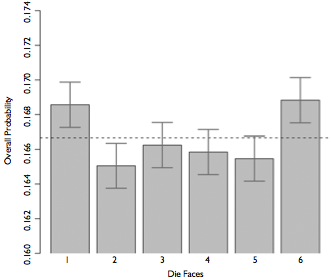
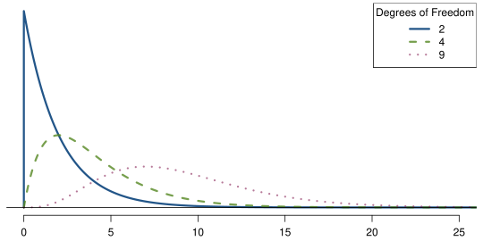
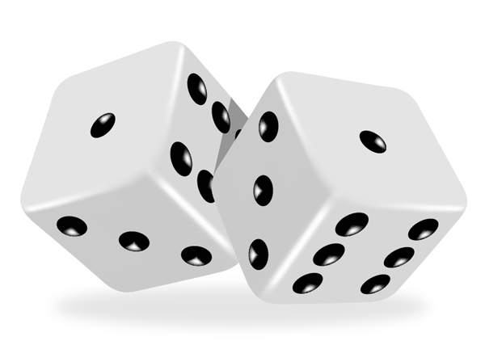
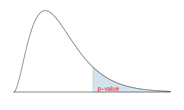
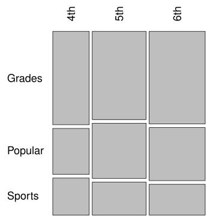

Benjamin Jäger
Slides first developed by Mine Çetinkaya-Rundel. Derivative of OpenIntro slides, shared under a CC BY-SA licence.
Two scientists want to know if a certain drug is effective against high blood pressure. The first scientist wants to give the drug to 1000 people with high blood pressure and see how many of them experience lower blood pressure levels. The second scientist wants to give the drug to 500 people with high blood pressure, and not give the drug to another 500 people with high blood pressure, and see how many in both groups experience lower blood pressure levels. Which is the better way to test this drug?
The GSS asks the same question, below is the distribution of responses from the 2010 survey:
| All 1000 get the drug | 99 |
| 500 get the drug 500 don’t | 571 |
| Total | 670 |
We would like to estimate the proportion of all Americans who have good intuition about experimental design, i.e. would answer “500 get the drug 500 don’t”? What are the parameter of interest and the point estimate?
What percent of all Americans have good intuition about experimental design, i.e. would answer “500 get the drug 500 don’t”?
We can answer this research question using a confidence interval, which we know is always of the form
\[\color{#FF8000}{point~estimate \pm ME}\]
And we also know that \(ME = critical~value \times standard~error\) of the point estimate.
Standard error of a sample proportion
\[SE_{\hat{p}} = \sqrt{\frac{p~(1-p)}{n}}\]
Central limit theorem for proportions
Sample proportions will be nearly normally distributed with mean equal to the population mean, \(p\), and standard error equal to \(\sqrt{\frac{p~(1-p)}{n}}\). \[\hat{p} \sim N \left( mean = p, SE = \sqrt{\frac{p~(1-p)}{n}} \right)\]
But of course this is true only under certain conditions…
Any guesses?
Independent observations, at least 10 successes and 10 failures
If \(p\) is unknown (most cases), we use \(\hat{p}\) in the calculation of the standard error.
The GSS found that 571 out of 670 (85%) of Americans answered the question on experimental design correctly. Estimate (using a 95% confidence interval) the proportion of all Americans who have good intuition about experimental design?
Given: \(n = 670, \hat{p} = 0.85\). First check conditions.
We are given that \(n = 670, \hat{p} = 0.85\), we also just learned that the standard error of the sample proportion is \(SE = \sqrt{\frac{p(1-p)}{n}}\). Which of the below is the correct calculation of the 95% confidence interval?
[Participate ⟹ strawpoll.live and use the code 833295]
How many people should you sample in order to cut the margin of error of a 95% confidence interval down to 1%.
\[ME = z^\star \times SE\]
\[\begin{eqnarray*} 0.01 &\ge& 1.96 \times \sqrt{\frac{0.85 \times 0.15}{n}} \color{#FF8000}{\text{$\rightarrow$ Use $\hat{p}$ from previous study}} \\ \phantom{0.01^2 }&\phantom{\ge}&\phantom{ 1.96^2 \times \frac{0.85 \times 0.15}{n}} \\ \phantom{n }&\phantom{\ge}&\phantom{ \frac{1.96^2 \times 0.85 \times 0.15}{0.01^2}} \\ \phantom{n }&\phantom{\ge}&\phantom{ 4898.04 \color{#FF8000}{\text{~$\rightarrow$ n should be at least 4,899}}} \end{eqnarray*}\]
\[\begin{eqnarray*} 0.01 &\ge& 1.96 \times \sqrt{\frac{0.85 \times 0.15}{n}} \color{#FF8000}{\text{$\rightarrow$ Use $\hat{p}$ from previous study}} \\ 0.01^2 &\ge& 1.96^2 \times \frac{0.85 \times 0.15}{n} \\ \phantom{n }&\phantom{\ge}&\phantom{ \frac{1.96^2 \times 0.85 \times 0.15}{0.01^2}} \\ \phantom{n }&\phantom{\ge}&\phantom{ 4898.04 \color{#FF8000}{\text{~$\rightarrow$ n should be at least 4,899}}} \end{eqnarray*}\]
\[\begin{eqnarray*} 0.01 &\ge& 1.96 \times \sqrt{\frac{0.85 \times 0.15}{n}} \color{#FF8000}{\text{$\rightarrow$ Use $\hat{p}$ from previous study}} \\ 0.01^2 &\ge& 1.96^2 \times \frac{0.85 \times 0.15}{n} \\ n &\ge& \frac{1.96^2 \times 0.85 \times 0.15}{0.01^2} \\ \phantom{n }&\phantom{\ge}&\phantom{ 4898.04 \color{#FF8000}{\text{~$\rightarrow$ n should be at least 4,899}}} \end{eqnarray*}\]
\[\begin{eqnarray*} 0.01 &\ge& 1.96 \times \sqrt{\frac{0.85 \times 0.15}{n}} \color{#FF8000}{\text{$\rightarrow$ Use $\hat{p}$ from previous study}} \\ 0.01^2 &\ge& 1.96^2 \times \frac{0.85 \times 0.15}{n} \\ n &\ge& \frac{1.96^2 \times 0.85 \times 0.15}{0.01^2} \\ \phantom{n }&\phantom{\ge}&\phantom{ 4898.04 \color{#FF8000}{\text{~$\rightarrow$ n should be at least 4,899}}} \end{eqnarray*}\]
\[\begin{eqnarray*} 0.01 &\ge& 1.96 \times \sqrt{\frac{0.85 \times 0.15}{n}} \color{#FF8000}{\text{$\rightarrow$ Use $\hat{p}$ from previous study}} \\ 0.01^2 &\ge& 1.96^2 \times \frac{0.85 \times 0.15}{n} \\ n &\ge& \frac{1.96^2 \times 0.85 \times 0.15}{0.01^2} \\ n &\ge& 4898.04 \color{#FF8000}{\text{~$\rightarrow$ n should be at least 4,899}} \end{eqnarray*}\]
… use \(\hat{p} = 0.5\)
why?
Success-failure condition:
Standard error:
The GSS found that 571 out of 670 (85%) of Americans answered the question on experimental design correctly. Do these data provide convincing evidence that more than 80% of Americans have a good intuition about experimental design?
\[H_0: p = 0.80 \qquad H_A: p > 0.80\]
\[\begin{eqnarray*} SE &=& \sqrt{\frac{0.80 \times 0.20}{670}} = 0.0154 \\ \phantom{Z }&\phantom{=}&\phantom{ \frac{0.85 - 0.80}{0.0154} = 3.25} \\ \phantom{p-value }&\phantom{=}&\phantom{ 1 - 0.9994 = 0.0006} \\ \end{eqnarray*}\]
\[\begin{eqnarray*} SE &=& \sqrt{\frac{0.80 \times 0.20}{670}} = 0.0154 \\ Z &=& \frac{0.85 - 0.80}{0.0154} = 3.25 \\ \phantom{p-value }&\phantom{=}&\phantom{ 1 - 0.9994 = 0.0006} \\ \end{eqnarray*}\]
\[\begin{eqnarray*} SE &=& \sqrt{\frac{0.80 \times 0.20}{670}} = 0.0154 \\ Z &=& \frac{0.85 - 0.80}{0.0154} = 3.25 \\ p-value &=& 1 - 0.9994 = 0.0006 \\ \end{eqnarray*}\]
Since the p-value is low, we reject \(H_0\). The data provide convincing evidence that more than 80% of Americans have a good intuition on experimental design.
11% of 1,001 Americans responding to a 2006 Gallup survey stated that they have objections to celebrating Halloween on religious grounds. At 95% confidence level, the margin of error for this survey is \(\pm 3\%\). A news piece on this study’s findings states: “More than 10% of all Americans have objections on religious grounds to celebrating Halloween.” At 95% confidence level, is this news piece’s statement justified?
Population parameter: \(p\), point estimate: \(\hat{p}\)
Conditions:
Standard error: \(SE = \sqrt{ \frac{p(1-p)}{n} }\)
Scientists predict that global warming may have big effects on the polar regions within the next 100 years. One of the possible effects is that the northern ice cap may completely melt. Would this bother you a great deal, some, a little, or not at all if it actually happened?
The GSS asks the same question, below are the distributions of responses from the 2010 GSS as well as from a group of introductory statistics students at Duke University:
| GSS | Duke | |
|---|---|---|
| A great deal | 454 | 69 |
| Some | 124 | 30 |
| A little | 52 | 4 |
| Not at all | 50 | 2 |
| Total | 680 | 105 |
Standard error of the difference between two sample proportions
\[SE_{(\hat{p}_1 - \hat{p}_2)} = \sqrt{ \frac{p_1(1-p_1)}{n_1} + \frac{p_2(1-p_2)}{n_2} }\]
Independence within groups:
We can assume that the attitudes of Duke students in the sample are independent of each other, and attitudes of US residents in the sample are independent of each other as well.
Independence between groups: The sampled Duke students and the US residents are independent of each other.
Success-failure:
At least 10 observed successes and 10 observed failures in the two groups.
Construct a 95% confidence interval for the difference between the proportions of Duke students and Americans who would be bothered a great deal by the melting of the northern ice cap (\(p_{Duke} - p_{US}\)).
| Data | Duke | US |
|---|---|---|
| A great deal | 69 | 454 |
| Not a great deal | 36 | 226 |
| Total | 105 | 680 |
| \(\hat{p}\) | 0.657 | 0.668 |
\[\begin{eqnarray*} && (\hat{p}_{Duke} - \hat{p}_{US}) \pm z^\star \times \sqrt{ \frac{ \hat{p}_{Duke} (1 - \hat{p}_{Duke})}{n_{Duke} } + \frac{ \hat{p}_{US} (1 - \hat{p}_{US})}{n_{US} } } \\ &\phantom{=}&\phantom{ (0.657 - 0.668) \pm 1.96 \times \sqrt{ \frac{0.657 \times 0.343}{105} + \frac{0.668 \times 0.332}{680} }} \\ &\phantom{=}&\phantom{ -0.011 \pm 1.96 \times 0.0497} \\ &\phantom{=}&\phantom{ -0.011 \pm 0.097} \\ &\phantom{=}&\phantom{ (-0.108, 0.086)} \end{eqnarray*}\]
\[\begin{eqnarray*} && (\hat{p}_{Duke} - \hat{p}_{US}) \pm z^\star \times \sqrt{ \frac{ \hat{p}_{Duke} (1 - \hat{p}_{Duke})}{n_{Duke} } + \frac{ \hat{p}_{US} (1 - \hat{p}_{US})}{n_{US} } } \\ &\phantom{=}&\phantom{ (0.657 - 0.668) \pm 1.96 \times \sqrt{ \frac{0.657 \times 0.343}{105} + \frac{0.668 \times 0.332}{680} }} \\ &\phantom{=}&\phantom{ -0.011 \pm 1.96 \times 0.0497} \\ &\phantom{=}&\phantom{ -0.011 \pm 0.097} \\ &\phantom{=}&\phantom{ (-0.108, 0.086)} \end{eqnarray*}\]
\[\begin{eqnarray*} && (\hat{p}_{Duke} - \hat{p}_{US}) \pm z^\star \times \sqrt{ \frac{ \hat{p}_{Duke} (1 - \hat{p}_{Duke})}{n_{Duke} } + \frac{ \hat{p}_{US} (1 - \hat{p}_{US})}{n_{US} } } \\ &\phantom{=}&\phantom{ (0.657 - 0.668) \pm 1.96 \times \sqrt{ \frac{0.657 \times 0.343}{105} + \frac{0.668 \times 0.332}{680} }} \\ &\phantom{=}&\phantom{ -0.011 \pm 1.96 \times 0.0497} \\ &\phantom{=}&\phantom{ -0.011 \pm 0.097} \\ &\phantom{=}&\phantom{ (-0.108, 0.086)} \end{eqnarray*}\]
\[\begin{eqnarray*} && (\hat{p}_{Duke} - \hat{p}_{US}) \pm z^\star \times \sqrt{ \frac{ \hat{p}_{Duke} (1 - \hat{p}_{Duke})}{n_{Duke} } + \frac{ \hat{p}_{US} (1 - \hat{p}_{US})}{n_{US} } } \\ &=& (0.657 - 0.668) \pm 1.96 \times \sqrt{ \frac{0.657 \times 0.343}{105} + \frac{0.668 \times 0.332}{680} } \\ &\phantom{=}&\phantom{ -0.011 \pm 1.96 \times 0.0497} \\ &\phantom{=}&\phantom{ -0.011 \pm 0.097} \\ &\phantom{=}&\phantom{ (-0.108, 0.086)} \end{eqnarray*}\]
\[\begin{eqnarray*} && (\hat{p}_{Duke} - \hat{p}_{US}) \pm z^\star \times \sqrt{ \frac{ \hat{p}_{Duke} (1 - \hat{p}_{Duke})}{n_{Duke} } + \frac{ \hat{p}_{US} (1 - \hat{p}_{US})}{n_{US} } } \\ &=& (0.657 - 0.668) \pm 1.96 \times \sqrt{ \frac{0.657 \times 0.343}{105} + \frac{0.668 \times 0.332}{680} } \\ &\phantom{=}&\phantom{ -0.011 \pm 1.96 \times 0.0497} \\ &\phantom{=}&\phantom{ -0.011 \pm 0.097} \\ &\phantom{=}&\phantom{ (-0.108, 0.086)} \end{eqnarray*}\]
\[\begin{eqnarray*} && (\hat{p}_{Duke} - \hat{p}_{US}) \pm z^\star \times \sqrt{ \frac{ \hat{p}_{Duke} (1 - \hat{p}_{Duke})}{n_{Duke} } + \frac{ \hat{p}_{US} (1 - \hat{p}_{US})}{n_{US} } } \\ &=& (0.657 - 0.668) \pm 1.96 \times \sqrt{ \frac{0.657 \times 0.343}{105} + \frac{0.668 \times 0.332}{680} } \\ &=& -0.011 \pm 1.96 \times 0.0497 \\ &\phantom{=}&\phantom{ -0.011 \pm 0.097} \\ &\phantom{=}&\phantom{ (-0.108, 0.086)} \end{eqnarray*}\]
\[\begin{eqnarray*} && (\hat{p}_{Duke} - \hat{p}_{US}) \pm z^\star \times \sqrt{ \frac{ \hat{p}_{Duke} (1 - \hat{p}_{Duke})}{n_{Duke} } + \frac{ \hat{p}_{US} (1 - \hat{p}_{US})}{n_{US} } } \\ &=& (0.657 - 0.668) \pm 1.96 \times \sqrt{ \frac{0.657 \times 0.343}{105} + \frac{0.668 \times 0.332}{680} } \\ &=& -0.011 \pm 1.96 \times 0.0497 \\ &=& -0.011 \pm 0.097 \\ &\phantom{=}&\phantom{ (-0.108, 0.086)} \end{eqnarray*}\]
\[\begin{eqnarray*} && (\hat{p}_{Duke} - \hat{p}_{US}) \pm z^\star \times \sqrt{ \frac{ \hat{p}_{Duke} (1 - \hat{p}_{Duke})}{n_{Duke} } + \frac{ \hat{p}_{US} (1 - \hat{p}_{US})}{n_{US} } } \\ &=& (0.657 - 0.668) \pm 1.96 \times \sqrt{ \frac{0.657 \times 0.343}{105} + \frac{0.668 \times 0.332}{680} } \\ &=& -0.011 \pm 1.96 \times 0.0497 \\ &=& -0.011 \pm 0.097 \\ &=& (-0.108, 0.086) \end{eqnarray*}\]
Which of the following is the correct set of hypotheses for testing if the proportion of all Duke students who would be bothered a great deal by the melting of the northern ice cap differs from the proportion of all Americans who do?
Both (a) and (c) are correct.
[Participate ⟹ strawpoll.live and use the code 833295]
Pooled estimate of a proportion
\[\hat{p} = \frac{\#~of~successes_1 + \#~of~successes_2}{n_1 + n_2}\]
Calculate the estimated pooled proportion of Duke students and Americans who would be bothered a great deal by the melting of the northern ice cap. Which sample proportion (\(\hat{p}_{Duke}\) or \(\hat{p}_{US}\)) the pooled estimate is closer to? Why?
| Data | Duke | US |
|---|---|---|
| A great deal | 69 | 454 |
| Not a great deal | 36 | 226 |
| Total | 105 | 680 |
| \(\hat{p}\) | 0.657 | 0.668 |
\[\begin{eqnarray*} \hat{p} &=& \frac{\#~of~successes_1 + \#~of~successes_2}{n_1 + n_2} \\ &\phantom{=}&\phantom{ \frac{69+454}{105+680} = \frac{523}{785} = 0.666} \end{eqnarray*}\]
\[\begin{eqnarray*} \hat{p} &=& \frac{\#~of~successes_1 + \#~of~successes_2}{n_1 + n_2} \\ &\phantom{=}&\phantom{ \frac{69+454}{105+680} = \frac{523}{785} = 0.666} \end{eqnarray*}\]
\[\begin{eqnarray*} \hat{p} &=& \frac{\#~of~successes_1 + \#~of~successes_2}{n_1 + n_2} \\ &\phantom{=}&\phantom{ \frac{69+454}{105+680} = \frac{523}{785} = 0.666} \end{eqnarray*}\]
\[\begin{eqnarray*} \hat{p} &=& \frac{\#~of~successes_1 + \#~of~successes_2}{n_1 + n_2} \\ &=& \frac{69+454}{105+680} = \frac{523}{785} = 0.666 \end{eqnarray*}\]
Do these data suggest that the proportion of all Duke students who would be bothered a great deal by the melting of the northern ice cap differs from the proportion of all Americans who do? Calculate the test statistic, the p-value, and interpret your conclusion in context of the data.
| Data | Duke | US |
|---|---|---|
| A great deal | 69 | 454 |
| Not a great deal | 36 | 226 |
| Total | 105 | 680 |
| \(\hat{p}\) | 0.657 | 0.668 |
\[\begin{eqnarray*} Z &=& \frac{(\hat{p}_{Duke} - \hat{p}_{US})}{\sqrt{ \frac{ \hat{p} (1 - \hat{p})}{n_{Duke} } + \frac{ \hat{p} (1 - \hat{p})}{n_{US} } }} \\ &\phantom{=}&\phantom{ \frac{(0.657 - 0.668)}{\sqrt{ \frac{0.666 \times 0.334}{105} + \frac{0.666 \times 0.334}{680} }} = \frac{-0.011}{0.0495} = -0.22} \\ \phantom{p-value }&\phantom{=}&\phantom{ 2 \times P(Z < -0.22) = 2 \times 0.41 = 0.82} \end{eqnarray*}\]
\[\begin{eqnarray*} Z &=& \frac{(\hat{p}_{Duke} - \hat{p}_{US})}{\sqrt{ \frac{ \hat{p} (1 - \hat{p})}{n_{Duke} } + \frac{ \hat{p} (1 - \hat{p})}{n_{US} } }} \\ &\phantom{=}&\phantom{ \frac{(0.657 - 0.668)}{\sqrt{ \frac{0.666 \times 0.334}{105} + \frac{0.666 \times 0.334}{680} }} = \frac{-0.011}{0.0495} = -0.22} \\ \phantom{p-value }&\phantom{=}&\phantom{ 2 \times P(Z < -0.22) = 2 \times 0.41 = 0.82} \end{eqnarray*}\]
\[\begin{eqnarray*} Z &=& \frac{(\hat{p}_{Duke} - \hat{p}_{US})}{\sqrt{ \frac{ \hat{p} (1 - \hat{p})}{n_{Duke} } + \frac{ \hat{p} (1 - \hat{p})}{n_{US} } }} \\ &\phantom{=}&\phantom{ \frac{(0.657 - 0.668)}{\sqrt{ \frac{0.666 \times 0.334}{105} + \frac{0.666 \times 0.334}{680} }} = \frac{-0.011}{0.0495} = -0.22} \\ \phantom{p-value }&\phantom{=}&\phantom{ 2 \times P(Z < -0.22) = 2 \times 0.41 = 0.82} \end{eqnarray*}\]
\[\begin{eqnarray*} Z &=& \frac{(\hat{p}_{Duke} - \hat{p}_{US})}{\sqrt{ \frac{ \hat{p} (1 - \hat{p})}{n_{Duke} } + \frac{ \hat{p} (1 - \hat{p})}{n_{US} } }} \\ &=& \frac{(0.657 - 0.668)}{\sqrt{ \frac{0.666 \times 0.334}{105} + \frac{0.666 \times 0.334}{680} }} = \frac{-0.011}{0.0495} = -0.22 \\ \phantom{p-value }&\phantom{=}&\phantom{ 2 \times P(Z < -0.22) = 2 \times 0.41 = 0.82} \end{eqnarray*}\]
\[\begin{eqnarray*} Z &=& \frac{(\hat{p}_{Duke} - \hat{p}_{US})}{\sqrt{ \frac{ \hat{p} (1 - \hat{p})}{n_{Duke} } + \frac{ \hat{p} (1 - \hat{p})}{n_{US} } }} \\ &=& \frac{(0.657 - 0.668)}{\sqrt{ \frac{0.666 \times 0.334}{105} + \frac{0.666 \times 0.334}{680} }} = \frac{-0.011}{0.0495} = -0.22 \\ \phantom{p-value }&\phantom{=}&\phantom{ 2 \times P(Z < -0.22) = 2 \times 0.41 = 0.82} \end{eqnarray*}\]
\[\begin{eqnarray*} Z &=& \frac{(\hat{p}_{Duke} - \hat{p}_{US})}{\sqrt{ \frac{ \hat{p} (1 - \hat{p})}{n_{Duke} } + \frac{ \hat{p} (1 - \hat{p})}{n_{US} } }} \\ &=& \frac{(0.657 - 0.668)}{\sqrt{ \frac{0.666 \times 0.334}{105} + \frac{0.666 \times 0.334}{680} }} = \frac{-0.011}{0.0495} = -0.22 \\ p-value &=& 2 \times P(Z < -0.22) = 2 \times 0.41 = 0.82 \end{eqnarray*}\]
Population parameter: \((p_1 - p_2)\), point estimate: \((\hat{p}_1 - \hat{p}_2)\)
Conditions:
Population parameter: \((p_1 - p_2)\), point estimate: \((\hat{p}_1 - \hat{p}_2)\)
\(SE_{(\hat{p}_1 - \hat{p}_2)} = \sqrt{ \frac{p_1(1-p_1)}{n_1} + \frac{p_2(1-p_2)}{n_2} }\)
for CI: use \(\hat{p}_1\) and \(\hat{p}_2\)
for HT:
| one sample | two samples | |
|---|---|---|
| mean | \(SE = \frac{s}{\sqrt{n}}\) | \(SE = \sqrt{ \frac{s_1^2}{n_1} + \frac{s_2^2}{n_2}}\) |
| proportion | \(SE = \sqrt{ \frac{p(1-p)}{n} }\) | \(SE = \sqrt{ \frac{p_1(1-p_1)}{n_1} + \frac{p_2(1-p_2)}{n_2} }\) |
When working with means, it’s very rare that \(\sigma\) is known, so we usually use \(s\).
When working with proportions,
In 2009, Zacariah Labby (U of Chicago), repeated Weldon’s experiment using a homemade dice-throwing, pip counting machine.
The rolling-imaging process took about 20 seconds per roll.

Labby rolled 12 dice 26,306 times. If each side is equally likely to come up, how many 1s, 2s, \(\cdots\), 6s would he expect to have observed?
The table below shows the observed and expected counts from Labby’s experiment.
| Outcome | Observed | Expected |
|---|---|---|
| 1 | 53,222 | 52,612 |
| 2 | 52,118 | 52,612 |
| 3 | 52,465 | 52,612 |
| 4 | 52,338 | 52,612 |
| 5 | 52,244 | 52,612 |
| 6 | 53,285 | 52,612 |
| Total | 315,672 | 315,672 |
Why are the expected counts the same for all outcomes but the observed counts are different? At a first glance, does there appear to be an inconsistency between the observed and expected counts?
Do these data provide convincing evidence of an inconsistency between the observed and expected counts?
The general form of a test statistic is \[\frac{\text{point estimate} - \text{null value}}{\text{SE of point estimate}}\]
This construction is based on
These two ideas will help in the construction of an appropriate test statistic for count data.
When dealing with counts and investigating how far the observed counts are from the expected counts, we use a new test statistic called the chi-square (\(\chi^2\)) statistic.
\(\chi^2\) statistic
\[\chi^2 = \sum_{i = 1}^k \frac{(O - E)^2}{E} \qquad \text{where $k$ = total number of cells}\]
| Outcome | Observed | Expected | \(\frac{(O - E)^2}{E}\) |
|---|---|---|---|
| 1 | 53,222 | 52,612 | \(\frac{(53,222 - 52,612)^2}{52,612} = 7.07\) |
| 2 | 52,118 | 52,612 | \(\frac{(52,118 - 52,612)^2}{52,612} = 4.64\) |
| 3 | 52,465 | 52,612 | \(\frac{(52,465 - 52,612)^2}{52,612} = 0.41\) |
| 4 | 52,338 | 52,612 | \(\frac{(52,338 - 52,612)^2}{52,612} = 1.43\) |
| 5 | 52,244 | 52,612 | \(\frac{(52,244 - 52,612)^2}{52,612} = 2.57\) |
| 6 | 53,285 | 52,612 | \(\frac{(53,285 - 52,612)^2}{52,612} = 8.61\) |
| Total | 315,672 | 315,672 | 24.73 |
Squaring the difference between the observed and the expected outcome does two things:
When have we seen this before?
So far we’ve seen three other continuous distributions:

As the df increases,
Estimate the shaded area (above the cutoff value of 10) under the \(\chi^2\) curve with \(df = 6\).
pchisq(q = 10, df = 6, lower.tail = FALSE) \(\phantom{aaaaaaa}\) [1] 0.124652
Estimate the shaded area (above the cutoff value of 17) under the \(\chi^2\) curve with \(df = 9\).
pchisq(q = 17, df = 9, lower.tail = FALSE) \(\phantom{aaaaaaa}\) [1] 0.04871598
Estimate the shaded area (above 30) under the \(\chi^2\) curve with \(df = 10\).
pchisq(q = 30, df = 10, lower.tail = FALSE) \(\phantom{aaaaaaa}\) [1] 0.0008566412
The research question was: Do these data provide convincing evidence of an inconsistency between the observed and expected counts?
The hypotheses were:
We had calculated a test statistic of \(\chi^2 = 24.67\).
All we need is the \(df\) and we can calculate the tail area (the p-value) and make a decision on the hypotheses.
The p-value for a chi-square test is defined as the tail area above the calculated test statistic.
p-value = \(P(\chi^2_{df = 5} > 24.67)\)
is less than 0.001
We calculated a p-value less than 0.001. At 5% significance level, what is the conclusion of the hypothesis test?
[Participate ⟹ strawpoll.live and use the code 833295]


Failing to check conditions may unintentionally affect the test’s error rates.
There was lots of talk of election fraud in the 2009 Iran election. We’ll compare the data from a poll conducted before the election (observed data) to the reported votes in the election to see if the two follow the same distribution.
| Observed # of | Reported % of | |
| Candidate | voters in poll | votes in election |
| (1) Ahmedinajad | 338 | 63.29% |
| (2) Mousavi | 136 | 34.10% |
| (3) Minor candidates | 30 | 2.61% |
| Total | 504 | 100% |
| \(\downarrow\) | \(\downarrow\) | |
| observed | expected | |
| distribution |
What are the hypotheses for testing if the distributions of reported and polled votes are different?
| Observed # of | Reported % of | Expected # of | |
| Candidate | voters in poll | votes in election | votes in poll |
| (1) Ahmedinajad | 338 | 63.29% | 504 \(\times\) 0.6329 = 319 |
| (2) Mousavi | 136 | 34.10% | 504 \(\times\) 0.3410 = 172 |
| (3) Minor candidates | 30 | 2.61% | 504 \(\times\) 0.0261 = 13 |
| Total | 504 | 100% | 504 |
\[\begin{eqnarray*} \frac{(O_1 - E_1)^2}{E_1} = \frac{(338 - 319)^2}{319} &=& 1.13 \\ \phantom{\frac{(O_2 - E_2)^2}{E_2} = \frac{(136 - 172)^2}{172} }&\phantom{=}&\phantom{ 7.53} \\ \phantom{\frac{(O_2 - E_2)^2}{E_2} = \frac{(30 - 13)^2}{13} }&\phantom{=}&\phantom{ 22.23} \\ \phantom{\chi^2_{\color{#0DA6FF}{{df = 3 - 1 = 2}}} }&\phantom{=}&\phantom{ 30.89} \end{eqnarray*}\]
\[\begin{eqnarray*} \frac{(O_1 - E_1)^2}{E_1} = \frac{(338 - 319)^2}{319} &=& 1.13 \\ \frac{(O_2 - E_2)^2}{E_2} = \frac{(136 - 172)^2}{172} &=& 7.53 \\ \phantom{\frac{(O_2 - E_2)^2}{E_2} = \frac{(30 - 13)^2}{13} }&\phantom{=}&\phantom{ 22.23} \\ \phantom{\chi^2_{\color{#0DA6FF}{{df = 3 - 1 = 2}}} }&\phantom{=}&\phantom{ 30.89} \end{eqnarray*}\]
\[\begin{eqnarray*} \frac{(O_1 - E_1)^2}{E_1} = \frac{(338 - 319)^2}{319} &=& 1.13 \\ \frac{(O_2 - E_2)^2}{E_2} = \frac{(136 - 172)^2}{172} &=& 7.53 \\ \frac{(O_2 - E_2)^2}{E_2} = \frac{(30 - 13)^2}{13} &=& 22.23 \\ \phantom{\chi^2_{\color{#0DA6FF}{{df = 3 - 1 = 2}}} }&\phantom{=}&\phantom{ 30.89} \end{eqnarray*}\]
\[\begin{eqnarray*} \frac{(O_1 - E_1)^2}{E_1} = \frac{(338 - 319)^2}{319} &=& 1.13 \\ \frac{(O_2 - E_2)^2}{E_2} = \frac{(136 - 172)^2}{172} &=& 7.53 \\ \frac{(O_2 - E_2)^2}{E_2} = \frac{(30 - 13)^2}{13} &=& 22.23 \\ \chi^2_{\color{#0DA6FF}{{df = 3 - 1 = 2}}} &=& 30.89 \end{eqnarray*}\]
Based on these calculations what is the conclusion of the hypothesis test?
[Participate ⟹ strawpoll.live and use the code 833295]
In the dataset popular, students in grades 4-6 were asked whether good grades, athletic ability, or popularity was most important to them. A two-way table separating the students by grade and by choice of most important factor is shown below. Do these data provide evidence to suggest that goals vary by grade?
| Grades | Popular | Sports | |
|---|---|---|---|
| \(4^{th}\) | 63 | 31 | 25 |
| \(5^{th}\) | 88 | 55 | 33 |
| \(6^{th}\) | 96 | 55 | 32 |

The hypotheses are:
The test statistic is calculated as \[\chi^2_{df} = \sum_{i = 1}^{k} \frac{(O - E)^2}{E} \quad \text{ where } \quad df = (R - 1) \times (C - 1),\] where \(k\) is the number of cells, \(R\) is the number of rows, and \(C\) is the number of columns.
We calculate \(df\) differently for one-way and two-way tables.
The p-value is the area under the \(\chi^2_{df}\) curve, above the calculated test statistic.
Expected counts in two-way tables
\[\text{Expected Count} = \frac{(\text{row total}) \times (\text{column total})}{\text{table total}}\]
| Grades | Popular | Sports | Total | |
|---|---|---|---|---|
| \(4^{th}\) | 63 | 31 | 25 | 119 |
| \(5^{th}\) | 88 | 55 | 33 | 176 |
| \(6^{th}\) | 96 | 55 | 32 | 183 |
| Total | 247 | 141 | 90 | 478 |
\[ \phantom{\color{#FF8000}{\text{$E_{row~1, col~1} = \frac{119 \times 247}{478} = 61$}} \qquad \color{#009900}{\text{$E_{row~1, col~2} = \frac{119 \times 141}{478} = 35$}}} \]
\[ \color{#FF8000}{\text{$E_{row~1, col~1} = \frac{119 \times 247}{478} = 61$}} \qquad \color{#009900}{\text{$E_{row~1, col~2} = \frac{119 \times 141}{478} = 35$}} \]
What is the expected count for the highlighted cell?
| Grades | Popular | Sports | Total | |
|---|---|---|---|---|
| \(4^{th}\) | 63 | 31 | 25 | 119 |
| \(5^{th}\) | 88 | 55 | 33 | 176 |
| \(6^{th}\) | 96 | 55 | 32 | 183 |
| Total | 247 | 141 | 90 | 478 |
\(\rightarrow\) 52
more than expected # of 5th graders
have a goal of being popular
Expected counts are shown in blue next to the observed counts.
| Grades | Popular | Sports | Total | |
|---|---|---|---|---|
| \(4^{th}\) | 63 61 | 31 35 | 25 23 | 119 |
| \(5^{th}\) | 88 91 | 55 52 | 33 33 | 176 |
| \(6^{th}\) | 96 95 | 55 54 | 32 34 | 183 |
| Total | 247 | 141 | 90 | 478 |
\[\begin{eqnarray*} \chi^2 &=& \sum \frac{(63 - 61)^2}{61} + \frac{(31 - 35)^2}{35} + \cdots + \frac{(32 - 34)^2}{34} = 1.3121 \\ \phantom{df }&\phantom{=}&\phantom{ (R - 1) \times (C - 1) = (3 - 1) \times (3 - 1) = 2 \times 2 = 4} \end{eqnarray*}\]
\[\begin{eqnarray*} \chi^2 &=& \sum \frac{(63 - 61)^2}{61} + \frac{(31 - 35)^2}{35} + \cdots + \frac{(32 - 34)^2}{34} = 1.3121 \\ df &=& (R - 1) \times (C - 1) = (3 - 1) \times (3 - 1) = 2 \times 2 = 4 \end{eqnarray*}\]
Which of the following is the correct p-value for this hypothesis test? \[\chi^2 = 1.3121 \qquad df = 4\]
Do these data provide evidence to suggest that goals vary by grade?
Since p-value is high, we fail to reject \(H_0\). The data do not provide convincing evidence that grade and goals are dependent. It doesn’t appear that goals vary by grade.
DSK803 · Chapter 6: Inference for categorical data